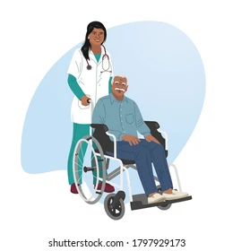

HEALTHCARE
Healthcare in India
The Indian healthcare system is a diverse and complex network of public and private sectors that provide a wide range of medical services to India's 1.4 billion inhabitants. Despite undergoing significant changes over the years, the system continues to face multiple challenges. These challenges include inadequate infrastructure, a shortage of healthcare professionals, urban-rural disparities, limited health insurance coverage, insufficient public healthcare funding, and a fragmented healthcare system. India is grappling with a growing burden of non-communicable diseases, which poses a significant challenge to its healthcare system.The Indian government has initiated multiple programs to improve the healthcare system. The National Health Mission improves the availability of medical equipment and supplies. This also promotes community participation and engagement in healthcare decision-making and service delivery. The Ayushman Bharat scheme is a health insurance program that provides coverage of up to INR 5 lakhs per family per year for secondary and tertiary care hospitalization.
Vaccination for Babies in India
 In India, babies receive a comprehensive vaccination schedule through the Universal Immunization Programme (UIP), which includes vaccines against a range of infectious diseases. These vaccines are provided free of cost at government hospitals. A full immunization schedule for a baby in India covers diseases like tuberculosis, polio, diphtheria, pertussis, tetanus, hepatitis B, Hib, measles, rubella, rotavirus, pneumococcal infections, Japanese encephalitis, typhoid, influenza, COVID-19, HPV, and hepatitis A.In India, vaccination is a crucial public health intervention, particularly for babies, and is a cornerstone of the National Immunization Program (NIP), also known as the Universal Immunization Programme (UIP). The NIP aims to protect infants and children from various vaccine-preventable diseases, significantly reducing childhood mortality and morbidity. This program provides free vaccines against 12 diseases, making it one of the world's largest routine childhood immunization programs.
In India, babies receive a comprehensive vaccination schedule through the Universal Immunization Programme (UIP), which includes vaccines against a range of infectious diseases. These vaccines are provided free of cost at government hospitals. A full immunization schedule for a baby in India covers diseases like tuberculosis, polio, diphtheria, pertussis, tetanus, hepatitis B, Hib, measles, rubella, rotavirus, pneumococcal infections, Japanese encephalitis, typhoid, influenza, COVID-19, HPV, and hepatitis A.In India, vaccination is a crucial public health intervention, particularly for babies, and is a cornerstone of the National Immunization Program (NIP), also known as the Universal Immunization Programme (UIP). The NIP aims to protect infants and children from various vaccine-preventable diseases, significantly reducing childhood mortality and morbidity. This program provides free vaccines against 12 diseases, making it one of the world's largest routine childhood immunization programs.
Caring for Adults

n India, healthcare for older adults is a growing focus, with the government and NGOs working to improve access and quality of care. Programs like the National Programme for the Health Care of the Elderly (NPHCE) provide free medical treatment, health check-ups, and rehabilitation care, particularly in rural areas. Additionally, initiatives like Ayushman Bharat – Pradhan Mantri Jan Arogya Yojana (PM-JAY) offer health insurance coverage to low-income elderly individuals.The Longitudinal Ageing Study of India (LASI) 2021 report, a full-scale national survey and a seminal study on the status and determinants of the ageing population in India by the Ministry of Health & Family Welfare, highlights that 75% of the elderly have one or more chronic diseases.
Organization of Healthcare Structure in India
Let us do a quick survey!!!
To know more about healthcare system in India online website links are provided
Click here to know more
BY KANKANA SAHA